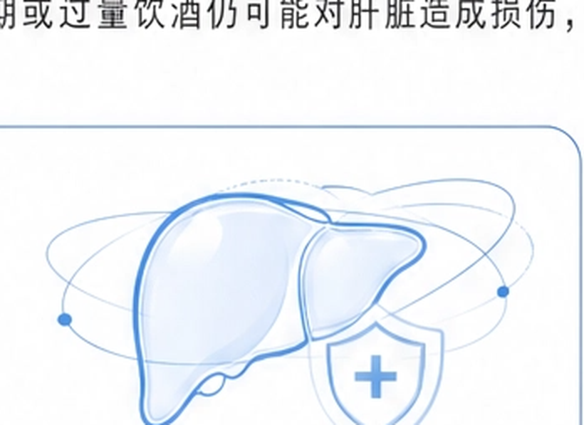

1检测结果卡片
检测基因ALDH2（醛脱氢酶2）
检测位点c.1510G > A（rs671）
检测结果GG
基因型解读正常
ALDH2 基因 c.1510G > A 位点（rs671）GG 基因型，编码的 ALDH2 酶活性正常。
肝脏解毒功能评估健康管理报告 | 第04/08页
ALDH2 基因 c.1510G > A 位点（rs671）GG 基因型，编码的 ALDH2 酶活性正常。
| 基因型 | 酶活性 | 酒精代谢能力 | 饮酒后不适反应风险 | 中国人群比例（约） | 代谢优势 |
|---|---|---|---|---|---|
| GG （正常型） |
正常 | ★★★★★ （强） |
低 | 约70%-80% |
|
| GA （杂合型） |
中等偏低 | ★★★☆☆ （中等） |
中等 | 约15%-20% |
|
| AA （突变型） |
几乎缺失 | ★☆☆☆☆ （弱） |
高 | 约5%-10% |
|
谢先生检测结果为 ALDH2 基因 c.1510G > A 位点 GG 基因型，属于正常型，提示您的 ALDH2 酶活性正常，乙醛代谢能力较强，酒精在体内的代谢效率较高，饮酒后不适反应风险较低，肝脏解毒负担相对较小。
这意味着您的先天酒精代谢能力具有优势，但请注意：良好的基因型并不等于可以无节制饮酒。长期或过量饮酒仍可能对肝脏造成损伤，增加脂肪肝、肝炎、肝纤维化甚至肝硬化的风险。
